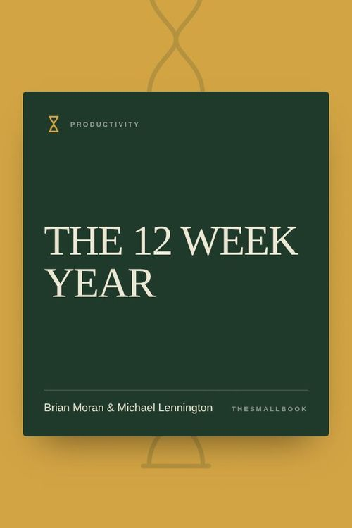

Library › Authors › Brian Moran & Michael Lennington
Books by Brian Moran & Michael Lennington
Brian Moran & Michael Lennington has one book in the library. Every book here is read down to the big idea, the lessons, the lines worth keeping and the actions worth taking. Start with the summary, then buy the full book if it earns a place on your shelf.

The 12 Week Year
2013 · 8 min · 6 lessons
Compress your year to 12 weeks and urgency returns. Vision, weekly plans, and accountability do the rest.
The problem with annual goals: 11 months of slack. Moran and Lennington's fix is brutal and effective - treat 12 weeks as one year: define a 12-week vision, break it into weekly plans, track lead (not lag) indicators on a public scoreboard, and meet a weekly accountability partner. When the 'year' is only 84 days long, urgency is automatic - and people consistently achieve in 12 weeks what they planned for 12 months.
Lessons in the summary
- Compress Your Year: 12 Weeks, Not 12 Months
- Vision First, Then Goals
- Lead Indicators Beat Lag Indicators
- The Scoreboard Makes It Real
- Accountability: The Weekly Partner Meeting
- Compress Your Year and Watch Execution Follow
Lines worth keeping
- The present moment is where the future is won or lost.
- What you do today matters - because you're exchanging a day of your life for it.
- Most people don't fail at execution; they fail at the system.
Questions Brian Moran & Michael Lennington helps answer
Read nearby authors next
- Robin Sharma 5 books
- Cal Newport 4 books
- Daniel H. Pink 3 books
- Nir Eyal 3 books
- Atul Gawande 2 books
- Brian Tracy 2 books
- Johann Hari 2 books
- Josh Kaufman 2 books
Questions Brian Moran & Michael Lennington helps answer
Where should I start with Brian Moran & Michael Lennington? Start with The 12 Week Year: Compress your year to 12 weeks and urgency returns. Vision, weekly plans, and accountability do the rest.